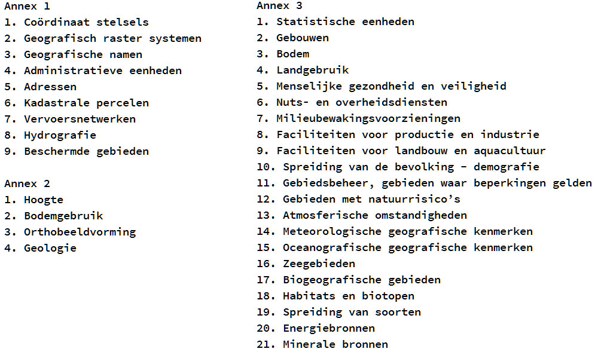

Ruimtelijke Open Data
(Bring Your Own Device)
Paul van Genuchten / @pvangenuchten license: CC-BY
http://pvgenuchten.github.io/presentations/2014/ECP_20140611

wij ~ zij?
© @elisabethirg
Wederzijdse onbekendheid?
Programma
- Achtergrond mismatch
- OGC API's
- INSPIRE
- Open data vinden
- Open data downloaden
- Open data visualiseren
- Vingeroefening
Achtergrond mismatch
- Materie is vrij complex (projecties, xml-encodings)
- Data providers publiceren de data met een eigen (geo) bril
- Interpretatieverschillen
- Grote bestanden
- Academische inslag
Hoe kan dat beter?
- Providers stimuleren data beter te presenteren
- Data portalen meer opties geven om data te extraheren
- Partijen bieden diensten aan op Open Data (CitySDK, ArcGIS Online, OpenGeo.nl)
- Nlextract.nl helpt met adviezen en tools
- Documentatie / onderwijs / samenwerking
OGC API(s)
© 2014 Open Geospatial Consortium
Algemeen in OGC API(s)
- XML georienteerd
- Initiele "getcapabilities" operatie
- Compliance tests op cite.opengeospatial.org en geonovum.nl
WMS
-
{wms}?service=wms&version=1.1.1
&request=getmap
&layers=archeologie
&bbox=0,400000,100000,500000
&srs=epsg:28992
&width=100&height=100
&format=image/png
WMTS
Als WMS, echter volgens vast grid (getegeld)
@ idgis.eu
WFS
-
{wfs}?service=wfs&version=1.1.0
&request=GetFeature
&typeName=gemaal
&outputFormat=json
&srsName=EPSG:4326
CSW
- API om een catalogus te bevragen
- GetCapabilities
- getRecords
- getRecordbyId
- Transaction
WPS
- API om processen op afstand uit te voeren
- GetCapabilities
- DescribeProcess
- Execute
SOS

GeoSparql
© muninn-project.org
Encodings voor ruimtelijke data
- GML
- KML
- O&M
- GeoJSON
INSPIRE
Kwaliteitskeurmerk voor ruimtelijke open data
INSPIRE, Open Data en Europa
- NL voorop met Open Data in INSPIRE context
- NL kiest voor minimale implementatie
- Soms door Open Data juist minder informatie
Keurmerk voor Open Data
- Aanmerkingsproces
- Quality of services
- Harmonisatie
Data specs

INSPIRE data providers
- EZ - CBS, RVO, KvK
- IenM - RWS, RDW, Prorail
- RCE
- Defensie - Hydrografische dienst
- Kadaster
- TNO, RIVM, KNMI
- Provincies
- Waterschappen
- Netwerk beheerders
- Gemeenten
Op zoek naar ruimtelijke open data
Nationaal
Georegister.nl
- Publicatiepunt INSPIRE richting Europa
- 7000 datasets
- Ruimtelijke data bekijken, combineren, downloaden
- dupliceert naar data.overheid.nl
INSPIRE portaal
- Europees portaal
- 280.000 datasets
PDOK.nl
- Data knooppunt van Kadaster, KvK, CBS en een deel van RWS en EZ
- Naast hosting ook aandacht voor ontsluiting
Provinciaal
georegister.nl
- Data knooppunt van provincie data
Overige knooppunten
- RIVM, TNO, KNMI
- Waterschappen, RDW, RCE
- RVO
- Hydrografische dienst
Ruimtelijke Open Data
Downloaden
Qgis
- Desktop pakket voor maken (en printen) van kaarten
- Data zoeken in NGR
- Data downloaden/converteren
GDAL/OGR
- Commandline transformatie
- Bindings voor python, java, .net, ruby
- ogr2ogr file.json file.gpkg -f geojson
Nationaal Georegister
- Extraheer data uit WFS gereedschap
- Beschikbare projecties en formaten afhankelijk achterliggende WFS
GeoKettle,
Talend, Hale
- GUI gebaseerde ETL
stetl.org
- Streaming ETL (INSPIRE / Basisregistraties)
- Pure XSLT (& OGR & Python)
Ruimtelijke
Open Data
Visualiseren
Desktop
- QGis / UDig / GVSig / Gaia / Mapwindow
- Google Earth
© QGis; Data Kadaster
Web
- Server: GeoServer, GeoNetwork, Mapserver, Mapnik, deegree, ...
- Server Configuratie: QGis, Tilemill, GeoCat Bridge
- Client: Leaflet, OpenLayers, PDOK, ...
- GeoCMS: Flamingo, GeoNode, geOrchestra, ...
- Cloud: CartoDB, MapBox, ...
GeoCat Live
- Cloud oplossing voor het publiceren van Ruimtelijke Open Data
- Publish Client voor ArcGIS TM
- (Meta)Data beschikbaar als WMS, WMTS, WFS, CSW
- Voldoet aan INSPIRE